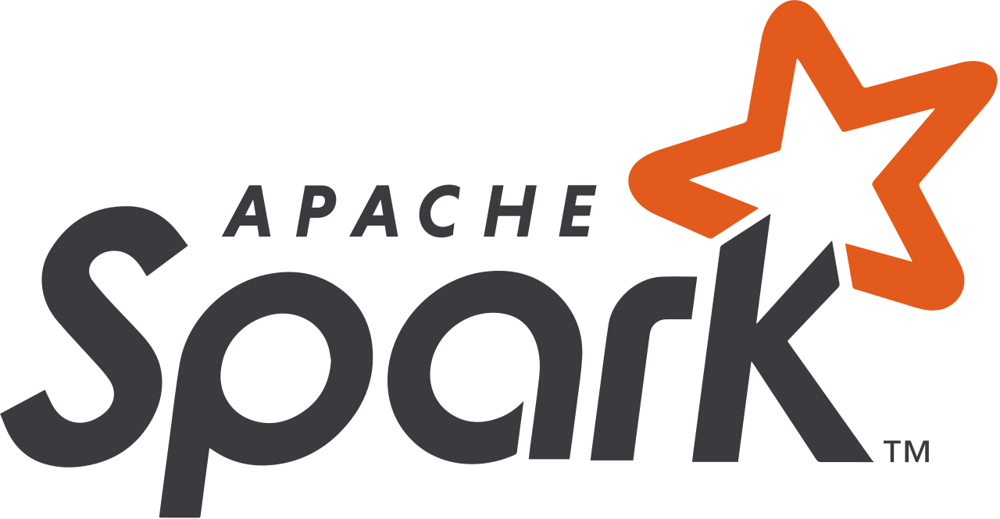
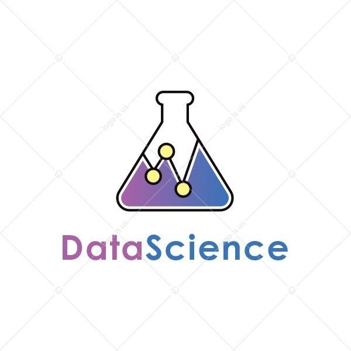
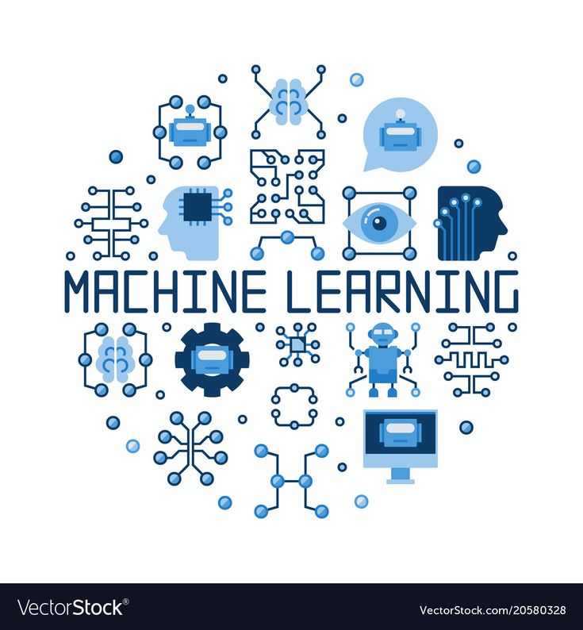
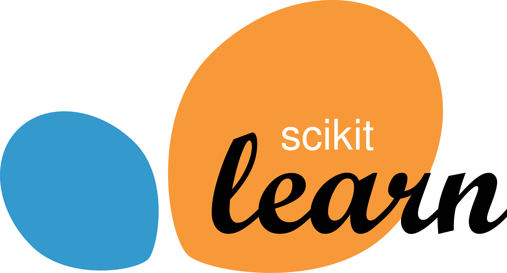
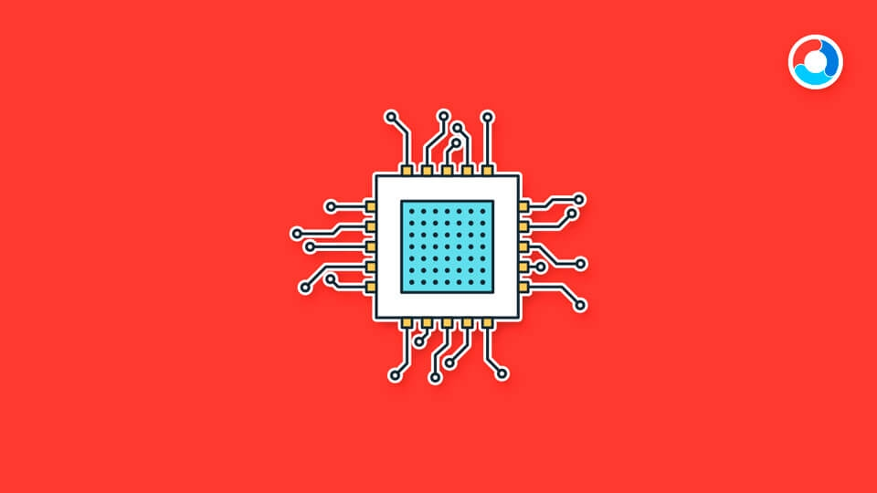

Simpsons-DaVinci
Proyecto basado en deep learning que combina autoencoders y redes generativas adversarias (GANs) para generar imágenes sintéticas de personajes de Los Simpsons en formato 64x64 píxeles. El objetivo es explorar técnicas de generación de datos y entender cómo los modelos pueden aprender a recrear estilos visuales a partir de un dataset de imágenes.
- Deep Learning
- PyTorch
- Image Processing
NY Taxi Trips
Proyecto de análisis de datos a gran escala utilizando el dataset de viajes en taxi de Nueva York. Incluye procesamiento y exploración de millones de registros, optimización de consultas con PySpark y visualización de patrones de movilidad urbana. El objetivo es identificar tendencias en la demanda, analizar factores como tiempo, localización y coste, y aplicar técnicas de Big Data para obtener información útil en la toma de decisiones.
- PySpark
- Hadoop
- Distributed Computing
Proyecto de machine learning enfocado en predecir la probabilidad de impago de clientes a partir del dataset Credit Default Risk de Kaggle. Incluye un proceso completo de análisis exploratorio, ingeniería de características y entrenamiento de modelos supervisados (árboles de decisión, gradient boosting y redes neuronales). El objetivo es mejorar la capacidad de las entidades financieras para gestionar el riesgo crediticio y tomar decisiones más informadas.
- Data Science
- Machine Learning
- Sklearn, Pandas, ...
Proyecto P2P amateur que permite la conexión directa entre dos ordenadores para la transferencia de archivos binarios de manera sencilla y rápida, sin necesidad de un servidor central. Ideal para intercambiar datos de forma segura y eficiente entre equipos.
- Sockets
- Threads
- C/C++